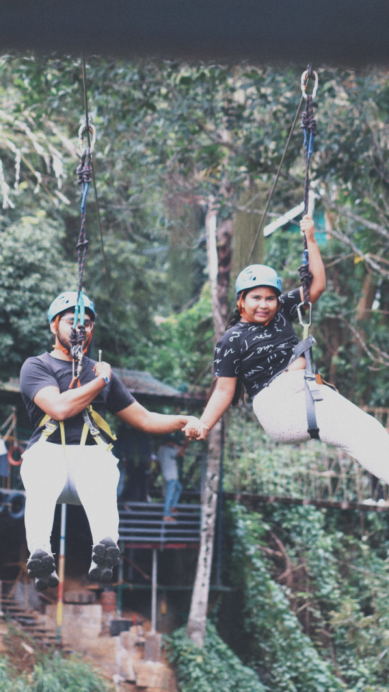
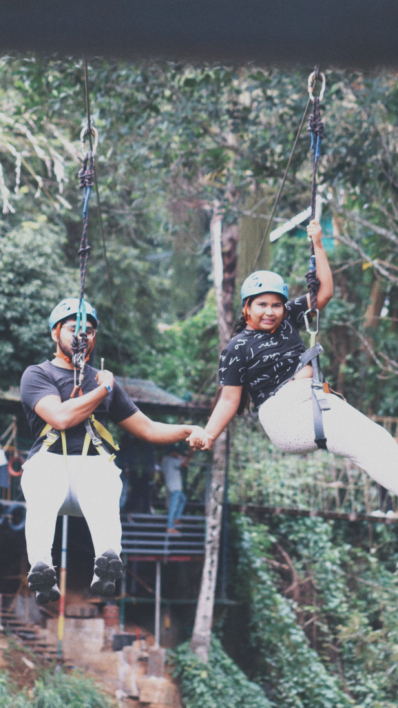

About Me
By nature, I’m someone who genuinely loves helping others. I find immense joy in going out of my way to support people, whether it’s offering solutions, sharing ideas, or just lending a listening ear. Conversations fuel my curiosity—I love talking to people, understanding their perspectives, and learning about their unique journeys.
Interestingly, my analytical mindset often turns these interactions into a fun challenge. I unconsciously build a model in my mind about people, piecing together patterns from what I know about them. It’s like solving a real-world data problem, where I predict their preferences or thoughts and then test my hypothesis by asking the right questions.
Beyond data and logic, I immerse myself in hobbies that bring joy and balance to my life. I enjoy playing football (American soccer), working out, organizing spaces—it’s my way of finding order and creativity in the everyday. I also love sketching, which allows me to express myself artistically and unwind. Experiencing new adventures excites me, whether it’s trying a new activity or discovering something unfamiliar.
And, of course, there’s my love for sneakers—a passion that merges style, culture, and a bit of self-expression. After all, can one ever have enough sneakers?
 
